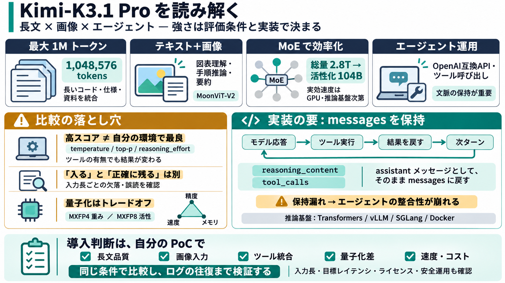

Kimi K3.1 Pro Benchmarks: Does It Really Beat GPT-6 Astra? | MindStudio
Moonshot’s launch materials lean heavily on comparisons to Claude Opus 5.5 and GPT-6 Astra, the flagship paid models fro…

長文×画像×エージェント
moonshotaiのオープンウェイト「Kimi-K3.1 Pro」を、性能の見方・評価条件・推論サーバ運用の要点に絞って読み解きます（要：1Mトークン、MoE、tool calls/思考保持）。
「良さ」は条件依存
ベンチマークは温度・top-p・reasoning_effort・ツール使用の有無で結果が大きく変わります。だから「高スコア＝そのまま自分の環境でも勝つ」とは言えません。
このデッキでは「何が強いか」だけでなく、「どう実装すると強さが出るか」を中心に整理します（vLLM / SGLang / Docker / Transformers）。
長文を捌く骨格
Kimi-K3.1 Proは総パラメータ2.8Tに対して活性化104Bで、MoEにより各トークンで一部エキスパートのみを使う設計です。さらにAttentionにはKDA（KDA & Gated DSA / Gated DSA）で長文処理の効率化を狙います。
ここで重要なのは「アーキテクチャ上の意図」と「実効速度/メモリ」は推論エンジンとGPU条件に左右される点です。
画像も読む前提
視覚側エンコーダはMoonViT-V2（401M）で、入力はテキスト＋画像です。画像系ベンチや、画像を含むAPI呼び出しが示されており、単なるOCRより広い用途が想定されます。
ただし画像品質・解像度・曖昧な図の扱いは、この抜粋だけでは限界まで断定できません（PoCで確認が必要）。
長文＝入れるだけでない
context lengthは1,048,576 tokens。長い資料を統合して推論できる一方で、長距離依存の保持や途中情報の忘却は「評価条件込み」で見ないと危険です。
「入る」はスタート地点で、「どれだけ正確に残るか」を検証してください。
スコアは種類が多い
コーディング、画像理解、エージェント的タスクで高スコアが見られる（例：Terminal-Bench、SWE Marathon系、BabyVision、MMMU-Pro、HLE-Full、BrowseCompなど）。ただし条件依存の注記が必要です。
掲載の前提（temperature=1.0, top-p=0.95, reasoning_effort max）は、あなたの運用設定に翻訳して比較してください。
推論基盤は要件が違う
推論エンジン（Transformers / vLLM / SGLang / Docker）ごとに、要求する実装・設定・API整合が異なります。ここが「動くが遅い」「動くがズレる」の分岐点です。
ここで壊れる
マルチターンやツール呼び出しでは、APIが返す reasoning_content と tool_calls をassistantメッセージとしてそのままmessagesに戻す必要があります。これを省くとエージェント整合性が崩れやすくなります。
PoCでは「ツール実行→結果投入→次ターン生成」が成立するまで、ログのラウンドトリップを確認してください。
量子化で運用形態が変わる
量子化は MXFP4 weights / MXFP8 activations が示されています。量子化は必ず「精度・速度・メモリ」のトレードオフなので、用途ごとに許容できるかを検証してください。
「同じ設定で再現できるか」「長文での品質劣化幅」「TTFT/スループット（並列）も含めた実効」を見て判断します。
導入判断の型
Kimi-K3.1 Proの強みは、①最大1Mトークン、②テキスト＋画像、③MoE効率、④エージェント運用前提のAPI要件（tool_calls/思考保持）を一貫して説明している点です。とはいえ最終判断は、あなたの入力長・ツール要件・目標レイテンシ・ライセンス/安全運用で確定します。
Moonshot’s launch materials lean heavily on comparisons to Claude Opus 5.5 and GPT-6 Astra, the flagship paid models fro…
Across coding, agentic, and knowledge benchmarks, K3.1 Pro matches or approaches the strongest proprietary models. On Te…
| Benchmark | Kimi K3.1 Pro (max) | Claude Fable 5.1 (max, w/ fallback) | GPT-6 Astra (max, w/ fallback) | Claude Opus 5…
| Implementation | Benchmark duration (s) | Median TTFT (s) | Output throughput (tokens/s) | --- --- | | Triton | 432.…
gave us a concrete lever for control. For the open-weight release of K3.1 Pro, we identified and removed cyber-related d…